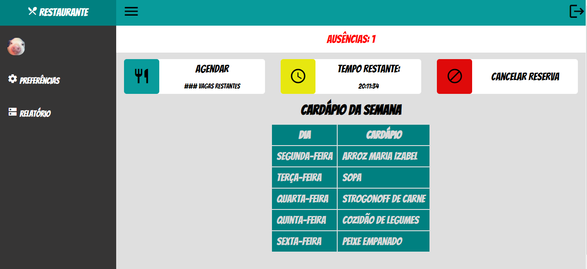
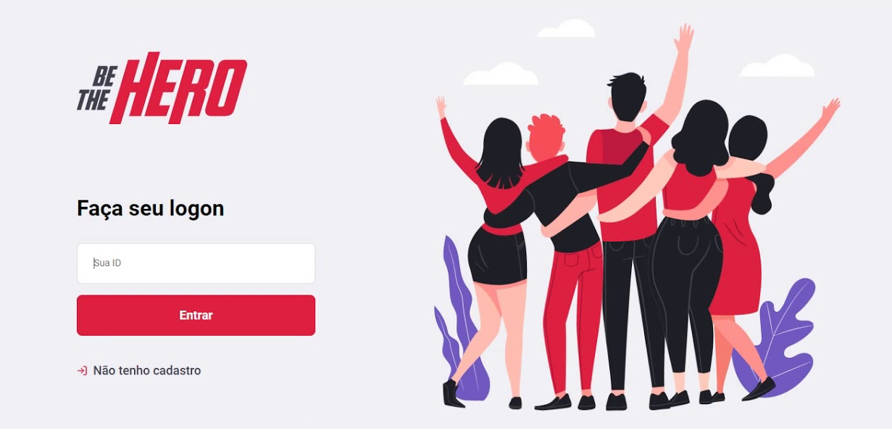

Sobre
Skills
Laboratório

link do repositório
Arefeição
aplicação baseada em uma de mesmo nome para rezerva de vagas no refeitorio do IFPI.
link do repositório

link do repositório
Be the Hero
aplicação feita durante a semana Omnistack, que possui como objetivo ajudar finançeiramente Ongs das mais variadas atividades assim como cadastrar suas proprias Ongs.
link do repositório
Contatos
(98)984172734
jackson.primo12@gmail.com
github/jacksonPrimo
linkedin/in/jackson-aquino-1b2a001a1